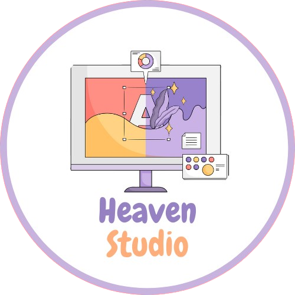

Heaven Studio
Les réseaux sociaux sont un outil de communication puissant qui a transformé la façon dont les gens interagissent les uns avec les autres.
Il s'agit d'une plate-forme où les utilisateurs peuvent se connecter avec leurs amis, leur famille et leurs collègues, partager leurs pensées, leurs sentiments et leurs expériences et construire une communauté autour d'intérêts communs.
L'un des réseaux sociaux les plus populaires aujourd'hui est Facebook, avec plus de 2,8 milliards d'utilisateurs actifs par mois.
Qui nous sommes ?
Nous sommes une équipe soudée, composée de quatre esprits passionnés et dévoués, travaillant sans relâche, jour et nuit, pour donner vie à notre projet. Chacun de nous apporte sa propre expertise, son énergie et sa vision unique, fusionnant nos talents et nos idées dans une symphonie harmonieuse d'efforts collectifs.
Depuis les premières lueurs de l'aube jusqu'aux heures tardives de la nuit étoilée, nous nous sommes engagés corps et âme dans cette entreprise. Chaque minute, chaque heure, chaque jour est une pierre angulaire de notre édifice, une étape vers l'excellence que nous visons à atteindre. Les défis sont nombreux, les obstacles nombreux, mais notre détermination est inébranlable.
À travers les vicissitudes et les moments de doute, nous puisons notre force dans notre passion commune, dans notre foi en notre projet et dans notre confiance mutuelle. Chaque échec est une leçon, chaque réussite une source de motivation renouvelée. Nous embrassons les difficultés avec courage, sachant qu'elles sont les pierres de touche de notre croissance et de notre apprentissage.
Et maintenant, alors que nous levons les yeux vers l'horizon, nous espérons que notre travail, fruit de tant d'efforts et de sacrifices, trouvera écho dans vos cœurs et dans vos esprits. Que notre création vous inspirera, vous émerveillera, vous transportera vers de nouveaux horizons de possibilités. Que chaque ligne écrite, chaque ligne de code, chaque coup de pinceau, reflète notre engagement inébranlable à vous offrir le meilleur de nous-mêmes.
Ainsi, avec humilité et gratitude, nous présentons notre œuvre, forgée dans le creuset de notre passion et de notre détermination. Puissiez-vous la recevoir avec bienveillance, la chérir comme nous l'avons chérie et trouver en elle une source d'inspiration et d'émerveillement infinis.
Notre projet ?
Dans une société où les liens intergénérationnels tendent parfois à se distendre, notre mission est claire : réunir toutes les générations, des plus anciennes aux plus jeunes, dans un tissu social solide et harmonieux. Car nous croyons fermement que la richesse d'une communauté se mesure à sa capacité à embrasser la diversité des expériences, des perspectives et des savoirs qui traversent les âges.
Ensemble, nous tissons une toile où les aînés apportent la sagesse forgée par les décennies, où les adultes offrent leur expérience du monde et où les jeunes insufflent leur énergie et leur vision audacieuse de l'avenir. Chaque génération est une pièce essentielle de ce puzzle complexe qu'est la société, et c'est en les unissant que nous parvenons à créer un ensemble harmonieux et équilibré.
Les anciens, gardiens de traditions séculaires et dépositaires d'un savoir-faire ancestral, trouvent dans cette union un écho à leur désir de transmission. Leurs récits, empreints de sagesse et d'expérience, constituent une source inestimable d'inspiration pour les générations à venir.
Les adultes, quant à eux, se nourrissent de cette connexion intergénérationnelle pour mieux comprendre les enjeux du présent et les défis de l'avenir. En échangeant avec les aînés, ils puisent dans leur expérience une boussole pour orienter leurs pas dans un monde en perpétuelle évolution.
Et que dire des jeunes, porteurs d'une vitalité débordante et d'une soif inextinguible de découverte ? Leur présence injecte un vent de renouveau dans nos interactions, stimulant la créativité et encourageant l'innovation. Guidés par les aînés et soutenus par les adultes, ils deviennent les architectes d'un avenir prometteur, où chaque idée, chaque projet, contribue à façonner le monde de demain.
Ensemble, nous formons une chaîne indissociable, où les maillons se renforcent mutuellement pour créer un ensemble plus grand que la somme de ses parties. Car c'est dans cette diversité, dans ce dialogue intergénérationnel, que se trouve la clé d'un avenir prospère et pérenne.
Ainsi, notre engagement envers la réunion de toutes les générations dépasse le simple objectif de rapprocher les âges. C'est un acte de préservation du patrimoine humain, un hommage à ceux qui nous ont précédés, une inspiration pour ceux qui viendront après nous. Et c'est dans cette continuité, dans cette communion entre les temps, que se trouve la véritable essence de notre humanité.
Notre Interface...
Un site comme Heaven Studio fonctionne comme une plateforme de communication en ligne conçue pour les communautés.
À son cœur se trouve un système de serveurs, où les utilisateurs peuvent créer ou rejoindre des espaces dédiés, appelés serveurs, pour discuter de sujets variés.
Chaque serveur peut être divisé en canaux thématiques, permettant une organisation précise des discussions.
Les utilisateurs peuvent échanger via des messages texte, vocaux ou même vidéo, selon les fonctionnalités disponibles.
Des rôles et des permissions peuvent être attribués aux membres pour réguler l'accès aux différentes parties du serveur.
Heaven Studio offre également des fonctionnalités supplémentaires telles que la possibilité de partager des fichiers, de diffuser des jeux en direct et d'intégrer divers bots pour automatiser certaines tâches ou ajouter des fonctionnalités personnalisées.
En somme, Heaven Studio offre un espace interactif et flexible pour la communication et la collaboration en ligne entre individus et communautés.
Un aperçue
Insertion d'image...